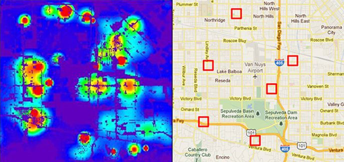

Case Studies
Evidence of algorithmic bias continues to grow and permeate many aspects of society. From health to financial decisions, the case studies on this page are the mere surface of a growing problem.
A widely used algorithm that predicts which patients will benefit from extra medical care dramatically underestimates the health needs of the sickest black patients, amplifying long-standing racial disparities in medicine, researchers have found
Explore

NYC uses a matchmaking algorithm to place high school students. The problem with that algorithm, students and experts today argue, is that it fails to account for disparities along racial lines. Because students are frequently screened by test scores, in which white and Asian students consistently perform better than black and Hispanic students, it ends up reinforcing existing inequality.
Explore

ProPublica analyzed a tool called COMPAS (which stands for Correctional Offender Management Profiling for Alternative Sanctions) and found that black defendants were far more likely than white defendants to be incorrectly judged to be at a higher risk of recidivism, while white defendants were more likely than black defendants to be incorrectly flagged as low risk.
Explore

Explore
A program called PredPol was created by UCLA scientists working with the Los Angeles Police Department, with the goal of seeing how scientific analysis of crime data could help spot patterns of criminal behavior. Now used by more than 60 police departments around the country, PredPol identifies areas in a neighborhood where serious crimes are more likely to occur during a particular period.
Explore
A recent analysis of nearly 7 million 30-year mortgages by University of California at Berkeley researchers found that black and Latino applicants were charged higher interest — an average of nearly 0.08% — and heavier refinance fees when compared with white borrowers. When applying online or through an app, minorities still ended up paying more, though terms were slightly better than when borrowing in person.
Explore
Shortly after the launch of the Apple Card in 2019, Apple co-founder Steve Wozniak and programmer David Heinemeier Hansson complained about unequal algorithmic treatment of their wives using the card. These complaints ignited a firestorm that engulfed the two giants of Silicon Valley and Wall Street, casting a pall over what the companies had claimed was the most successful launch of a credit card ever.
Explore
ProPublica conducted an analysis of premiums and payouts in California, Illinois, Texas and Missouri shows that some major insurers charge minority neighborhoods as much as 30 percent more than other areas with similar accident costs.
Explore
A privacy group wants the Federal Trade Commission to investigate HireVue, a hiring intelligence platform, alleging that the company uses of facial recognition technology, biometric data, and “secret” algorithms amount to unfair and deceptive trade practices.
Explore
A study by Northeastern University, the University of Southern California, and the public-interest advocacy group Upturn revealed that Facebook delivers certain ads, including for housing and employment, in a way that aligns with race and gender stereotypes — even when advertisers ask for the ads to be exposed a broad, inclusive audience.
Explore